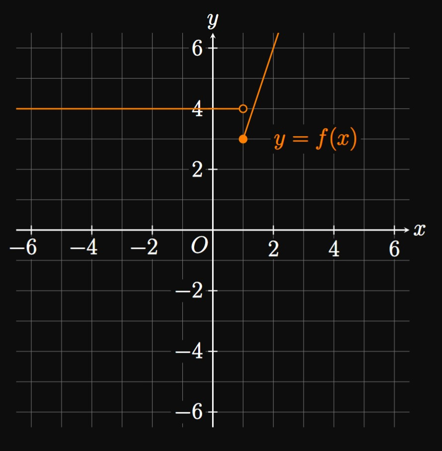

SOLUTION
A function is a rule that assigns one number \(x\)
in the domain \(D\) to one number in the range \(E.\)
Thus, the domain is the set of all possible values of \(x,\)
and the range is the set of all possible values of \(f(x).\)
EXERCISE 2
Define an even function and an odd function.
SOLUTION
An even function satisfies \(f(-x) = f(x);\)
then the graph is symmetric about the \(y\)-axis.
In contrast, an odd function satisfies \(f(-x) = -f(x),\)
so the graph is symmetric about the origin.
EXERCISE 3
For
justify whether the graph represents \(y\) as a function of \(x\).
SOLUTIONYes. Any vertical line strikes the curve only once,
so this graph passes the Vertical Line Test.
EXERCISE 4
For
justify whether the graph represents \(y\) as a function of \(x\).
SOLUTIONNo. Since some vertical lines strike the curve more than once,
this graph fails the Vertical Line Test.
On what intervals is \(f\) increasing?
On what intervals is \(f\) decreasing?
SOLUTION
The points \((-4, -3)\) and \((2, 2)\) are on the graph of \(y = f(x).\)
Thus,
\[f(-4) = \boxed{-3} \and f(2) = \boxed 2\]
The function \(f\) is defined for all \(x\) between \(-5\) and \(6\)
excluding \(x = -5\) and \(x = 1.\)
So the domain is
\[\boxed{(-5, 1) \cup (1, 6]}\]
The graph of \(f\) takes on all \(y\)-values between \(-7\) and \(5\)
excluding \(-7\) and all values between \(3\) and \(4.5.\)
The range is therefore
\[\boxed{(-7, 3) \cup (4.5, 5]}\]
The function \(f\) is increasing on
\[\boxed{(-5, 0] \cup (1, 2]}\]
and decreasing on
\[\boxed{[0, 1) \cup (2, 6]}\]
EXERCISE 6
If \(f(x) = x^2 + x + 3,\) then determine
\(f(2)\)
\(f(-2)\)
the \(y\)-intercept of the graph of \(y = f(x)\)
SOLUTION
In \(f(x) = x^2 + x + 3,\)
replacing \(x\) with \(2\) gives
\[
\ba
f(2) &= (2)^2 + (2) + 3 \nl
&= \boxed 9
\ea
\]
In \(f(x) = x^2 + x + 3,\)
replacing \(x\) with \(-2\) gives
\[
\ba
f(-2) &= (-2)^2 + (-2) + 3 \nl
&= \boxed 5
\ea
\]
The \(y\)-intercept is the point at which the graph of \(y = f(x)\)
touches the \(y\)-axis—that is, when \(x = 0.\)
This \(y\)-coordinate is
\[
\ba
f(0) &= (0)^2 + (0) + 3 \nl
&= 3 \pd
\ea
\]
So the \(y\)-intercept is \(\boxed{(0, 3)}.\)
EXERCISE 7
A function is defined by the following values of \(x\) and \(f(x).\)
Find the domain and range of \(f.\)
\(x\)
\(0\)
\(1\)
\(3\)
\(5\)
\(7\)
\(f(x)\)
\(2\)
\(8\)
\(-4\)
\(4\)
\(2\)
SOLUTION
The domain is the set of all input values:
\[D = \boxed{\{0, 1, 3, 5, 7\}}\]
The range is the set of all output values:
\[E = \boxed{\{-4, 2, 4, 8\}}\]
EXERCISE 8
The function
\(C(n) = n^3 + 2n^2 + 4n + 6\)
models the cost, in thousands of dollars, for a company to manufacture \(n\) hundred computers.
Determine the cost for the firm to produce
\(200\) computers
\(400\) computers
SOLUTION
Producing \(200\) computers is modeled by \(n = 2,\)
which we substitute into the function to attain
\[C(2) = (2)^3 + 2(2)^2 + 4(2) + 6 = 30 \pd\]
Because \(C\) is measured in thousands of dollars, the cost is \(\boxed{\$30000}.\)
Producing \(400\) computers is modeled by \(n = 4 \col\)
\[C(4) = (4)^3 + 2(4)^2 + 4(4) + 6 = 118 \pd\]
So the cost is \(\boxed{\$118000}.\)
EXERCISE 9
For
\[f(x) = 8x - 3\]
simplify the difference quotient \([f(x + h) - f(x)]/h,\) where \(h \ne 0,\)
for the given function \(f\).
SOLUTION
The domain is the set of all possible values of \(x.\)
It's possible to square any real number and add \(1,\)
so no restrictions exist.
Hence, the domain is the set of all real numbers,
\(\boxed{\RR}.\)
In interval notation, we write \(\boxed{(-\infty, \infty)}.\)
Both answers are equivalent.
EXERCISE 13
For
\[\ds \sqrt{x + 9}\]
find the domain.
SOLUTION
The domain is the set of all possible values of \(x;\)
it's easiest to consider what \(x\) cannot be.
The square root of a negative number is undefined (as a real number),
so the domain is all \(x\) such that \(x + 9\) is nonnegative—namely,
\[
\ba
\{x \mid x + 9 \geq 0\} &= \{x \mid x \geq -9\} \nl
&= \boxed{[-9, \infty)}
\ea
\]
EXERCISE 14
For
\[\ds \sqrt{10 - 2x}\]
find the domain.
SOLUTION
The domain is the set of all possible values of \(x;\)
it's easiest to consider what \(x\) cannot be.
The square root of a negative number is undefined (as a real number),
so the domain is all \(x\) such that \(10 - 2x\) is nonnegative—namely,
\[
\ba
\{x \mid 10 - 2x \geq 0\} &= \{x \mid x \leq 5\} \nl
&= \boxed{(-\infty, 5]}
\ea
\]
EXERCISE 15
For
\[\ds \sqrt[3]{6x}\]
find the domain.
SOLUTION
The cube root is defined for any number (including negative numbers).
So the domain is \(\boxed{\RR}\) \(= \boxed{(-\infty, \infty)}.\)
EXERCISE 16
For
\[\ds \frac{x}{x^2 - 9}\]
find the domain.
SOLUTION
The domain is the set of all possible values of \(x;\)
it's easiest to consider what \(x\) cannot be.
The denominator equals \(0\) when
\[x^2 - 9 = (x + 3)(x - 3) = 0 \cma\]
which occurs when \(x = -3\) and \(x = 3.\)
Division by \(0\) is undefined, so the domain is all other real numbers:
\[\{x \mid x \ne -3 \text{ and } x \ne 3 \} = \boxed{(-\infty, -3) \cup (-3, 3) \cup (3, \infty)}\]
EXERCISE 17
For
\[\ds \frac{x + 4}{x^2 - 8x - 9}\]
find the domain.
SOLUTION
The domain is the set of all possible values of \(x;\)
it's easiest to consider what \(x\) cannot be.
The denominator equals \(0\) when
\[x^2 - 8x - 9 = (x - 9)(x + 1) = 0 \cma\]
which occurs when \(x = -1\) and \(x = 9.\)
Division by \(0\) is undefined, so the domain is all other real numbers:
\[\{x \mid x \ne -1 \text{ and } x \ne 9 \} = \boxed{(-\infty, -1) \cup (-1, 9) \cup (9, \infty)}\]
EXERCISE 18
Avery operates an ice cream truck in which she sells sundaes for \(\$7\) each.
Write a function for Avery's revenue \(R\) as a function of \(s,\) the number of sundaes she sells.
What is the domain of \(R(s)\) in context?
SOLUTION
Avery earns \(\$7\) for selling \(1\) sundae, \(\$14\) for selling \(2\) sundaes,
and \(7s\) dollars for selling \(s\) sundaes.
Thus, her revenue function is
\[R(s) = \boxed{7s}\]
Since the number of sundaes sold must be a nonnegative integer, the domain in context is
\[
\{s \mid s \geq 0 \text{ and } s \text{ is an integer}\} = \boxed{\{0, 1, 2, 3, \dots\}}
\]
EXERCISE 19
Each month, a cell phone carrier charges a fixed price of \(\$5\)
and a fee of \($0.10\) per minute used, with a limit of \(900\) minutes per month.
Write a function for the monthly cost \(C\) as a function of the number of minutes used, \(m.\)
What is the domain of \(C(m)\) in context?
SOLUTION
After \(1 \un{min}\) of phone use, the cost is \(\$5.10;\)
after \(2 \un{min},\) the cost is \(\$5.20.\)
Thus, after \(m\) minutes, the cost is
\[C(m) = \boxed{5 + 0.10m}\]
Because the number of minutes called is nonnegative and less than \(900,\)
the domain in context is
\[\{m \mid 0 \leq m \leq 900\} = \boxed{[0, 900]}\]
EXERCISE 20
A computer initially worth \(\$1000\) loses \(20\%\) of its value each year.
Write a function for its value \(V\) as a function of the years \(t\) since its purchase.
Find the domain of \(V(t)\) in context.
SOLUTION
Each year, the computer retains \(80 \%\) of its value.
After \(1 \un{yr}\) of the computer's initial purchase, it is worth \(\$1000 \times 0.80\) \(= \$800.\)
After \(2 \un{yr},\) it is worth \(\$1000 \times 0.80 \times 0.80\) \(= \$640.\)
Thus, after \(t\) years, the computer is worth
\[V(t) = \boxed{1000 (0.80)^t}\]
Time can't be negative,
so the domain in context is
\[\{t \mid t \geq 0\} = \boxed{[0, \infty)}\]
EXERCISE 21
The following steps define a riddle that calculates your age:
First double your age.
Then add \(4.\)
Then divide the result by \(2.\)
Lastly, subtract \(2.\)
Write a formula to model this function.
What is interesting about the result?
SOLUTION
Let \(n\) be your age.
The riddle defines a set of operations modeled by the function
\[f(n) = \boxed{\tfrac{1}{2} (2n + 4) - 2}\]
Upon simplification, we find
\[
\ba
f(n) &= \tfrac{1}{2} (2n) + \tfrac{1}{2} (4) - 2 \nl
&= n + 2 - 2 \nl
&= n \pd
\ea
\]
Hence, the function's output equals the input.
Accordingly, the riddle will always return your age.
The \(y\)-intercept is the point at which the graph hits the \(y\)-axis—namely, when \(x = 0.\)
So we have
\[f(0) = \tfrac{1}{2} (0)^2 + 2 = 2 \pd\]
Therefore, the \(y\)-intercept is \(\boxed{(0, 2)}.\)
EXERCISE 23
Consider the piecewise function
\[
f(x) =
\bc
6x + 20 &x \lt -3 \nl
\tfrac{1}{2} x^4 + 1 &-3 \leq x \lt 2 \nl
4 - 3x &x \geq 2 \pd
\ec
\]
Find the value of
\[4 f(-2) - f(3) + 6f(-5) \pd \]
A uniform, insulating sphere is charged and has a radius of \(R.\)
The electric field inside the sphere is directly proportional to the distance \(r\) from the sphere's center.
Outside the sphere, the electric field varies inversely with the square of the distance from the sphere's center.
Write a piecewise function to represent this electric field \(E\) as a function of \(r.\)
Then graph the rough shape of \(E(r).\)
SOLUTION
Let \(C_1\) and \(C_2\) be constants of proportionality.
Inside the sphere—that is, for \(r \lt R\)—the electric field follows the relation
\[E = C_1 r \pd\]
Outside the sphere—that is, for \(r \gt R\)—the electric field is given by
\[E = \frac{C_2}{r^2} \pd\]
At \(r = R,\) both functions must be equal because the electric field is a continuous quantity.
The piecewise function is
\[
E(r) =
\boxed{\bc
C_1 r &r \leq R \nl
C_2/r^2 &r \gt R
\ec}
\]
Because the graph is connected at \(r = R,\) the inequalities are not strict;
we could also write
\[
E(r) =
\bc
C_1 r &r \lt R \nl
C_2/r^2 &r \geq R \pd
\ec
\]
EXERCISE 25
The cost \(C\) to mail an envelope varies according to the weight \(w\) (in pounds) of its contents,
as modeled by the function
\[
C(w) =
\bc
0.97 &0 \leq w \leq 1 \nl
1.24 &1 \lt w \leq 2 \nl
1.62 &2 \lt w \leq 3 \nl
1.98 &3 \lt w \leq 4 \pd
\ec
\]
The post office does not use envelopes for packages heavier than \(4\) pounds.
Graph \(C(w).\)
Find the domain of \(C(w).\)
What is the cost of mailing a \(1.8\)-pound book?
What about a \(3\)-pound laptop?
SOLUTION
The domain of \(C(w)\) includes all possible values of \(w\) between \(0\) and \(4,\) inclusive:
\[
\{w \mid 0 \leq w \leq 4\} = \boxed{[0, 4]}
\]
It costs \(\boxed{\$1.24}\) to mail a \(1.8\)-pound book \((w = 1.8)\) and \(\boxed{\$1.62}\) to mail a \(3\)-pound laptop \((w = 3).\)
EXERCISE 26
A cell phone plan charges a base rate of \(\$30\) a month,
which includes \(500\) free minutes of usage.
Each additional minute costs \(\$0.10.\)
Express the monthly cost \(C\) as a function of \(x,\)
the number of minutes used.
Then graph \(C(x).\)
SOLUTION
If \(x \gt 500\) is the number of minutes used,
then the number of surplus minutes is \(x - 500.\)
Each minute after \(500\) minutes costs \(\$0.10,\)
so the additional cost is \(0.1(x - 500).\)
Thus, the total cost for \(x \gt 500\) is
\[30 + 0.1(x - 500) \pd\]
So the piecewise function is
\[
C(x)
=
\boxed{\bc
30 &0 \leq x \leq 500 \nl
30 + 0.1(x - 500) &x \gt 500
\ec}
\]
EXERCISE 27
In printing a new calculus textbook,
a publishing firm charges \($0.10\) per page for the first \(400\) pages
and \(\$0.15\) per subsequent page.
Express the total printing cost \(P\) as a function of \(x,\)
the number of pages.
Find the domain of \(P(x)\) in context.
What is the cost of printing a \(700\)-page calculus textbook?
SOLUTION
For \(0 \leq x \leq 400\) the cost of printing is \(0.1x.\)
The number of pages past \(400\) is given by \(x - 400,\)
so for \(x \gt 400\) each subsequent page costs \(0.15(x - 400).\)
But the total cost of printing a textbook with over \(400\) pages
is
\[
\ba
(\text{cost of first 400 pages}) + (\text{cost of additional pages}) &= 0.1(400) + 0.15(x - 400) \nl
&= 40 + 0.15(x - 400) \pd
\ea
\]
Hence, the piecewise function \(P\) is
\[
P(x) =
\boxed{\bc
0.1x &0 \leq x \leq 400 \nl
40 + 0.15(x - 400) &x \gt 400
\ec}
\]
The domain of \(P\) in context represents all possible values of pages printed.
The pages printed must be a nonnegative integer, so the domain in context is
\[
\ba
\{x \mid x \geq 0 \text{ and } x \text{ is an integer}\}
= \boxed{\{0, 1, 2, 3, \dots\}}
\ea
\]
The cost of printing \(700\) pages is
\[P(700) = 40 + 0.15(700 - 400) = \boxed{\$85}\]
EXERCISE 28
For
\[\ds
f(x)
=
\bc
4 & x \lt 1 \nl
3x & x \geq 1
\ec
\]
graph the piecewise function.
SOLUTION

EXERCISE 29
For
\[\ds
f(x)
=
\bc
x - 1 & x \lt 0 \nl
\sqrt x & x \geq 0
\ec
\]
graph the piecewise function.
SOLUTION
EXERCISE 30
For
\[\ds
f(x)
=
\bc
x + 2 & x \leq -1 \nl
x^2 & x \gt -1
\ec
\]
graph the piecewise function.
SOLUTION
EXERCISE 31
For
\[\ds
f(x)
=
\bc
-6 & x \lt -5 \nl
\tfrac{1}{2} x & -5 \leq x \lt 1 \nl
\sqrt x &x \geq 1
\ec
\]
SOLUTION
Replacing \(x\) with \(-x\) gives
\[f(-x) = 40 = f(x) \pd\]
In words, \(f\) is unchanged when \(x\) is replaced by \(-x.\)
Thus, \(f\) is even.
(In fact, the horizontal line \(y = 40\) is symmetric about the \(y\)-axis, as expected.)
EXERCISE 39
For
\[\ds f(x) = \frac{8x^5}{x^3 + 5}\]
determine whether \(f\) is even, odd, or neither.
SOLUTION
Replacing \(x\) with \(-x\) gives
\[
\ba
f(-x) &= \frac{8(-x)^5}{(-x)^3 + 2} \nl
&= \frac{-8x^5}{-x^3 + 2} \pd
\ea
\]
But \(f(-x) \ne f(x)\) and \(f(-x) \ne -f(x),\)
so \(f\) is neither even nor odd.
EXERCISE 40
For
The top half of the circle \((x - 5)^2 + y^2 = 9\)
find a function for the given curve.
SOLUTION
Solving for \(y,\) we have
\[
\ba
y^2 &= 9 - (x - 5)^2 \nl
\abs y &= \sqrt{9 - (x - 5)^2} \nl
y &= \pm \sqrt{9 - (x - 5)^2} \pd
\ea
\]
To represent the top half, we use the positive solution:
\[\boxed{y = \sqrt{9 - (x - 5)^2}}\]
EXERCISE 41
For
The bottom half of the circle \(x^2 + (y + 8)^2 = 16\)
find a function for the given curve.
SOLUTION
Solving for \(y,\) we have
\[
\ba
(y + 8)^2 &= 16 - x^2 \nl
\abs{y + 8} &= \sqrt{16 - x^2} \nl
y + 8 &= \pm \sqrt{16 - x^2} \nl
y &= -8 \pm \sqrt{16 - x^2} \pd
\ea
\]
To represent the bottom half, we use the negative solution:
\[\boxed{y = -8 - \sqrt{16 - x^2}}\]
EXERCISE 42
For
The top half of the ellipse \(x^2/100 + y^2/81 = 1\)
find a function for the given curve.
SOLUTION
Solving for \(y,\) we have
\[
\ba
\frac{y^2}{81} &= 1 - \frac{x^2}{100} \nl
y^2 &= 81 \par{1 - \frac{x^2}{100}} \nl
\abs y &= 9 \sqrt{1 - \frac{x^2}{100}} \nl
y &= \pm 9 \sqrt{1 - \frac{x^2}{100}} \pd
\ea
\]
To represent the top half, we use the positive solution:
\[\boxed{y = 9 \sqrt{1 - \frac{x^2}{100}}}\]
EXERCISE 43
If \((4, 6)\) is on the graph of an even function,
then what other point is on the graph?
SOLUTION
If \(f\) is even, then \(f(-x) = f(x).\)
Because \(f(4) = 6,\) it follows that \(f(-4) = 6.\)
Hence, \(\boxed{(-4, 6)}\) is also on the graph.
Note that \((-4, 6)\) is the result of mirroring \((4, 6)\) across the \(y\)-axis.
EXERCISE 44
If \((2, 8)\) is on the graph of an odd function,
then what other point is on the graph?
SOLUTION
A function \(f\) is odd if and only if \(f(-x) = -f(x).\)
Because \(f(2) = 8,\) it follows that \(f(-2) = -8.\)
Hence, \(\boxed{(-2, -8)}\) is also on the graph.
Note that \((-2, -8)\) is the result of rotating \((2, 8)\) by \(180 \degree\) about the origin.
EXERCISE 45
For any positive integer \(n,\) let \(f(x) = x^n.\)
Prove that
\(f\) is even if \(n\) is even
\(f\) is odd if \(n\) is odd
SOLUTION
The function \(f\) is even if and only if \(f(-x) = f(x),\)
and it is odd if and only if \(f(-x) = -f(x).\)
Replacing \(x\) with \(-x\) gives
\[f(-x) = (-x)^n = (-1)^n \, x^n \pd\]
For even \(n,\) \((-1)^n = 1.\)
Hence,
\[f(-x) = (1) \, x^n = x^n = f(x)\]
and so \(f\) is even.
If \(n\) is odd, then \((-1)^n = -1.\)
Consequently,
\[f(-x) = (-1) \, x^n = -x^n = -f(x) \cma\]
so \(f\) is odd.
EXERCISE 46
Show that the product of two odd functions is an even function.
SOLUTION
Let \(f\) and \(g\) be two odd functions.
Then \(f(-x) = -f(x)\) and \(g(-x) = -g(x).\)
Hence, we have
\[
\ba
f(-x) g(-x) &= [-f(x)][-g(x)] \nl
&= f(x) g(x) \pd
\ea
\]
Because the product \(f(x) g(x)\) is unchanged by replacing \(x\) with \(-x,\)
the product is an even function.
EXERCISE 47
If a rectangle's perimeter is \(30,\)
then express its area as a function of a side's length.
Find this function's domain in context.
SOLUTION
Let \(w\) be the rectangle's width and \(\ell\) be its length.
Then its area is
\begin{equation}
A = w \ell \pd \label{eq:rect-A}
\end{equation}
To express \(A\) in terms of \(\ell,\)
we want to express \(w\) in terms of \(\ell.\)
The rectangle's perimeter is
\[2w + 2 \ell = 30 \pd\]
Solving for \(w\) gives \(w = 15 - \ell,\)
which we substitute into \(\eqref{eq:rect-A}\) to attain the function
\[A(\ell) = (15 - \ell) \ell = \boxed{15 \ell - \ell^2}\]
Neither of the side lengths, \(\ell\) and \(w = 15 - \ell,\) can be negative.
So the domain in context is
\[
\ba
\{\ell \mid \ell \geq 0 \text{ and } 15 - \ell \geq 0\} &= \{\ell \mid 0 \leq \ell \leq 15\} \nl
&= \boxed{[0, 15]}
\ea
\]
At each endpoint, the rectangle's area is \(0.\)
EXERCISE 48
A rectangle's area is \(28.\)
Express its perimeter as a function of a side's length,
and determine the domain in context.
SOLUTION
Let \(w\) be the rectangle's width and \(\ell\) be its length.
Then its perimeter is
\begin{equation}
P = 2 \ell + 2w \pd \label{eq:rect-P}
\end{equation}
To express \(P\) in terms of \(\ell,\)
we want to express \(w\) in terms of \(\ell.\)
The rectangle's area is
\[w \ell = 28 \pd\]
Solving for \(w\) gives \(w = 28/\ell,\)
which we substitute into \(\eqref{eq:rect-P}\) to attain the function
\[P(\ell) = 2 \ell + 2 \par{\frac{28}{\ell}} = \boxed{2 \ell + \frac{56}{\ell}}\]
Neither of the side lengths, \(\ell\) and \(w = 28/\ell,\) can be negative.
So the domain in context is
\[
\ba
\left\{\ell \mid \ell \geq 0 \text{ and } \frac{28}{\ell} \geq 0 \right\} &= \{\ell \mid \ell \gt 0\} \nl
&= \boxed{(0, \infty)}
\ea
\]
As the length \(\ell\) is made closer to \(0,\)
the perimeter approaches \(\infty.\)
EXERCISE 49
Express a circle's area in terms of its circumference \(C.\)
What is the domain in context?
SOLUTION
If \(r\) is a circle's radius, then its area is
\begin{equation}
A = \pi r^2 \label{eq:circ-area}
\end{equation}
and its circumference is \(C = 2 \pi r.\)
Solving for \(r\) yields \(r = C/2 \pi,\)
which we substitute into \(\eqref{eq:circ-area}\) to get
\[A(C) = \pi \par{\frac{C}{2 \pi}}^2 = \boxed{\frac{C^2}{4 \pi}}\]
A circle's circumference must be nonnegative, so the domain in context is
\[
\{C \mid C \geq 0\} = \boxed{[0, \infty)}
\]
EXERCISE 50
A rectangular prism has a square base whose lengths are \(x.\)
If the prism's volume is \(400,\) then express its surface area \(S\) as a function of \(x.\)
Then give the domain in context.
SOLUTION
Let's call \(y\) the prism's height.
Then the prism's volume is
\begin{equation}
x^2 y = 400 \pd \label{eq:prism-V}
\end{equation}
The prism's two square faces each have an area of \(x^2,\)
and the four rectangular faces each have an area of \(xy.\)
So the prism's total surface area is their sum:
\begin{equation}
S = 2x^2 + 4xy \pd \label{eq:prism-S}
\end{equation}
To express \(S\) entirely in terms of \(x,\)
we express \(y\) in terms of \(x.\)
From \(\eqref{eq:prism-V}\) we have \(y = 400/x^2,\)
which we substitute into \(\eqref{eq:prism-S}\) to get
\[
\ba
S(x) &= 2x^2 + 4x \par{\frac{400}{x^2}} \nl
&= \boxed{2x^2 + \frac{1600}{x}}
\ea
\]
Because the side length \(x\) can't be negative,
the domain of \(S\) in context is
\[
\ba
\{x \mid x \gt 0\} = \boxed{(0, \infty)}
\ea
\]
EXERCISE 51
A slot is constructed by connecting two semicircles to two horizontal line segments
(Figure 12).
If the slot's perimeter is \(50,\)
then express its area \(A\) as a function of each semicircle's diameter, \(x.\)
SOLUTION
Let \(y\) be the length of each horizontal line segment.
Each semicircle's radius is \(x/2,\)
so its circumference is \(\pi x/2.\)
The slot's perimeter of \(50\) is given by \(2y\) plus the two semicircles' circumferences—namely,
\begin{align}
2 \par{\frac{\pi x}{2}} + 2y &= 50 \nonum \nl
\pi x + 2y &= 50 \label{eq:slot-perimeter} \pd
\end{align}
Each semicircle's area is \(\tfrac{1}{2} \pi (x/2)^2\) \(= \pi x^2/8,\)
and the middle rectangle's area is \(xy.\)
Hence, the slot's area is
\begin{align}
A &= 2 \par{\frac{\pi x^2}{8}} + xy \nonum \nl
&= \frac{\pi x^2}{4} + xy \pd \label{eq:slot-area}
\end{align}
Our goal is to express \(A\) solely in terms of \(x,\)
so we want to express \(y\) in terms of \(x.\)
From \(\eqref{eq:slot-perimeter},\)
solving for \(y\) gives
\[
\ba
y &= \tfrac{1}{2} (50 - \pi x) \nl
&= 25 - \frac{\pi x}{2} \cma
\ea
\]
which we substitute into \(\eqref{eq:slot-area}\) to attain
\[
\ba
A(x) &= \frac{\pi x^2}{4} + x \par{25 - \frac{\pi x}{2}} \nl
&= \boxed{25x - \frac{\pi x^2}{4}}
\ea
\]